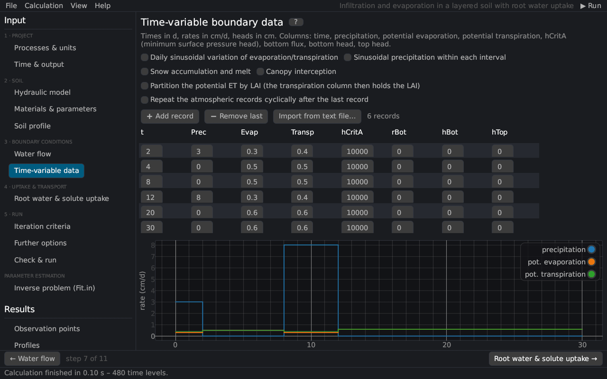

Input (pre-processing)
Time-variable boundary data
With an atmospheric or another time-variable boundary condition, the boundary values come from a table of records, the file ATMOSPH.IN of HYDRUS-1D (Time-Variable Boundary Conditions dialog). Each record holds from the end of the previous record (or the initial time) to its time t.


Columns
| Column | Description |
|---|---|
| t | end time of the record [T] |
| Prec | precipitation (and irrigation) [L/T] |
| Evap | potential evaporation [L/T] (with LAI partitioning: potential evapotranspiration; with a variable head/flux top: the code KodTop) |
| Transp | potential transpiration [L/T] (with LAI partitioning: the leaf area index) |
| hCritA | absolute value of the minimum pressure head at the surface [L]: below it the surface turns into a head condition and the evaporation is reduced (e.g. 10⁴–10⁵ cm) |
| rBot, hBot, hTop | bottom flux, bottom head, top head [L/T, L] for variable flux or head conditions |
| Ttop, Tbot, Ampl | temperatures at the top and the bottom and the amplitude of the daily surface temperature (heat transport) [°C] |
| cTop k, cBot k | concentrations of solute k at the top and the bottom [M/L³] (with active uptake: cBot of the actively taken-up solute is the potential uptake rate) |
| xRoot | rooting depth (root growth from the atmospheric data) [L] |
➕ Add record adds a copy of the last record one time unit later; Import from text file… reads records from a text or CSV file with at least 8 columns in the order of the table. The plot below the table shows precipitation, potential evaporation and transpiration as step functions.
Options
| Option | Description |
|---|---|
| Daily sinusoidal variation of evaporation/transpiration | Distributes daily rates over the day: 24 % of the mean rate at night and a sine wave during the day Fayer (2000) (theory). |
| Sinusoidal precipitation within each interval | The precipitation of each record follows a sine wave over its interval. |
| Snow accumulation and melt | Snow below −2 °C, rain above +2 °C, mixed in between; melt with the degree-day factor [L/T/°C] (Ttop is the air temperature) (snow). |
| Canopy interception | Interception capacity a · LAI with the interception constant a [L] von Hoyningen-Hüne (1983); Braden (1985). |
| Partition the potential ET by LAI | The Evap column holds ETp and the Transp column the LAI; Tp = ETp (1 − e−k·LAI) Ritchie (1972) with the extinction coefficient k (0.463). |
| Repeat the atmospheric records cyclically | After the last record the table starts again (lBCCycles). |
See also: atmospheric boundary condition · atmospheric inputs · meteorological data
Literature cited in this topic
- Braden, H. (1985). Ein Energiehaushalts- und Verdunstungsmodell für Wasser- und Stoffhaushaltsuntersuchungen landwirtschaftlich genutzter Einzugsgebiete. Mitteilungen der Deutschen Bodenkundlichen Gesellschaft 42: 294–299.
- Fayer, M. J. (2000). UNSAT-H Version 3.0: Unsaturated Soil Water and Heat Flow Model. Theory, User Manual, and Examples. Report PNNL-13249, Pacific Northwest National Laboratory, Richland, WA.
- Ritchie, J. T. (1972). Model for predicting evaporation from a row crop with incomplete cover. Water Resources Research 8(5): 1204–1213. doi:10.1029/WR008i005p01204
- von Hoyningen-Hüne, J. (1983). Die Interception des Niederschlags in landwirtschaftlichen Beständen. Schriftenreihe des DVWK 57: 1–53.
All sources: References.